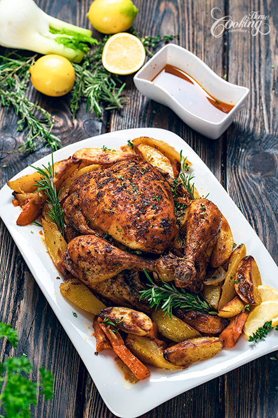

Roasted Chicken recipe

Ingredients
- whole chicken
- 10g salt
- 2g paprika
- 1g black pepper
- 5g garlic
- 2 tsp mixed herbs
- 35g olive oil
- baby potatoes, cut in halves
For stuffing
- 1 lemon
- 2 rosemery sprigs
- Fresh thyme
Steps
- Pat chicken dry and leave at room temp for 30 minutes
- Preheat the oven to 350F (180C), with fan on.
- In a bowl combine all spices, salt, pepper, paprika, garlic powder and dried herbs with the olive oil
- Season the cavity with salt and pepper
- Coat the chicken with olive oil mixture, on all sides. If not already tied up, tie the legs with a cooking string.
Set aside at room temperature until you prepare the vegetables for roasting.
- Cut red potatoes and sweet potatoes into wedges, the fennel bulb into thick slices and place in a baking sheet. Sprinkle with salt, pepper, caraway powder, drizzle with olive oil and toss to coat.
- Place the oven rack on top of the vegetables and place the chicken on the center of the rack with breast side up.
- Stuff the chicken with 1 lemon cut into quarters and with two fresh rosemary sprigs and fresh thyme.
- Pour 1 cup (240ml) hot water into the baking dish and place in the preheated oven
- Roast for about 20 minutes per pound (45 minutes per kg), in my case for 80 minutes. Baste the chicken with the dripping sauce, every 30 minutes
- Check the internal temperature until it reaches 165°F (75°C)
-
Search
Menu
Whole Roasted Chicken
CHRISTMAS EASTER HEALTHY RECIPES MAIN DISHES POTATO RECIPES THANKSGIVING
Whole Roasted Chicken
By Ella-HomeCookingAdventure December 8, 2020 3 Comments
Jump to Recipe Print Recipe
This Whole Roasted Chicken recipe is one of the easiest ways of roasting a whole chicken, with great results each time. This beautifully browned chicken with roasted vegetables is an impressive dish you can prepare for upcoming holidays. The chicken is juicy with a crispy skin and very flavorful due to all the spices used.
The recipe is really easy, uses really basic ingredients and you can feel free to adapt the recipe to suit your own tastes, like using different herbs or none at all, different vegetables like carrots or parsnip, onion and garlic. Just make sure to follow the steps and you will get the best roasted chicken ever.
Hope you will try this Whole Roasted Chicken and enjoy!
Whole Roasted Chicken Vertical
RELATED POSTS:
Stuffed Chicken Breast
Roasted Turkey Breast
Chicken Cordon Bleu
Whole Roasted Chicken
Whole Roasted Chicken
No ratings yet
This is one of the easiest ways of roasting a whole chicken, with great results each time.
SERVINGS
6 servings
PREP TIME
20 mins
COOK TIME
1 hr 20 mins
TOTAL TIME
1 hr 40 mins
PRINT RECIPE PIN RECIPE
Ingredients
1x
2x
3x
4 pounds (1.9kg) whole chicken
2 tsp (10g) salt
1/2 tsp (2g) sweet or smoked paprika
1/2 tsp (1g) freshly ground black pepper
1 ½ tsp (5g) garlic powder
2 tsp mixed dried herbs (oregano , thyme
2 ½ tbsp (35g) olive oil
For stuffing
1 lemon , cut in quarters
2 rosemary sprigs
Fresh thyme
For Roasted Vegetables
2 pounds (900g) red potatoes , cut into wedges
1 pound (450g) sweet potato , cut into wedges
1 fennel bulb , sliced 1/2 inch (1cm) thick
1/2 tsp (3g) salt
1/4 tsp freshly ground black pepper
1/2 tsp (2g) caraway powder
1 ½ tbsp (20g) olive oil
For roasting
1 cup (240ml) hot water
Instructions
Pat dry the chicken using paper towels and let it get to room temperature for at least 30 minutes.
Preheat the oven to 350F (180C), with fan on.
In a bowl combine all spices, salt, pepper, paprika, garlic powder and dried herbs with the olive oil.
Season the cavity with salt and pepper.
Coat the chicken with olive oil mixture, on all sides. If not already tied up, tie the legs with a cooking string. Set aside at room temperature until you prepare the vegetables for roasting.
Cut red potatoes and sweet potatoes into wedges, the fennel bulb into thick slices and place in a baking sheet. Sprinkle with salt, pepper, caraway powder, drizzle with olive oil and toss to coat.
Place the oven rack on top of the vegetables and place the chicken on the center of the rack with breast side up.
Stuff the chicken with 1 lemon cut into quarters and with two fresh rosemary sprigs and fresh thyme.
Pour 1 cup (240ml) hot water into the baking dish and place in the preheated oven.
Roast for about 20 minutes per pound (45 minutes per kg), in my case for 80 minutes. Baste the chicken with the dripping sauce, every 30 minutes.
If water evaporated too early, add another up ½ cup hot water into the pan.
Check the internal temperature until it reaches 165°F (75°C).
Place the chicken onto a serving platter, arrange the vegetables around it and let it sit for 15-20 minutes before carving.